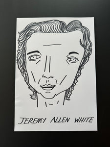
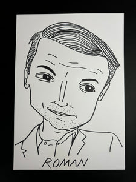
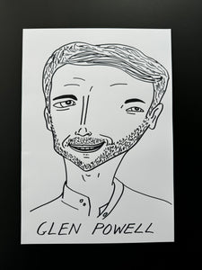

Matt
Matt was bitten by a radioactive spider while on a school trip to a science facotry.
Shortly after the bite, the spider died of Leukemia and Matt decided tojoin
this
startup as a way to pass the time while waiting for the poison or radiation
to get him.

Noah
Noah survived the earth's flooding - purely coincidentally, he was sailing in
international
waters on his yatch, the lion's kiss. After surviving the flood he
decided to
give up his technically illegal love of animals
and find a way to ensure others
could have
access to as many animals as they desire.

Padraig
Padraig's parent's tragically died on their way back from the theatre when he was
five.
Although they were billionairs, both would sooner die than share any of their wealth
with
anyone and that is exactly what happened. Padraig uses this company as a shell
corporation to avoid
paying taxes and as cover for his nightly activities of punishing every criminal he sees
on the
streets using his bare hands. The homeless population of Baden are terrifed of him.